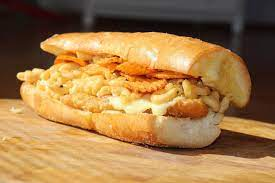
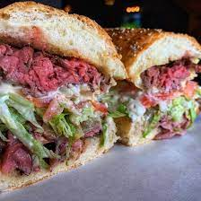
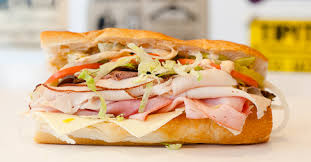

#3 Gioia's Deli - The King Cod
I'm beginning my countdown with a less traditional style sub that also contains all the St. Louis favorites. This sub is packed with a behemoth size piece of fried cod, smothered in mac n cheese, and top off with red hot riplets. And to make this sandwich so St. Louis, it rests between two pieces of garlic provel bread. Add hotsauce for more heartburn.
#2 Gramophone - Fight Club
Roast beef, provel, mushroom, carmalized onions, horseradish blue cheese, lettuce, tomato, and garlic butter. It's hard not to talk about. This sandwich also pairs well with any of their handmade cocktails. Gramophone is so good, you'll be planning your next visit while eating their food.
#1 Blues City Deli - Any sandwich available
I'm not kidding. Any sandwich they're making will be better than anything else out there. I currently don't work for them, nor have I ever worked for them or done business with them. I want their subs every day and I don't know how else to express how much I love them.
